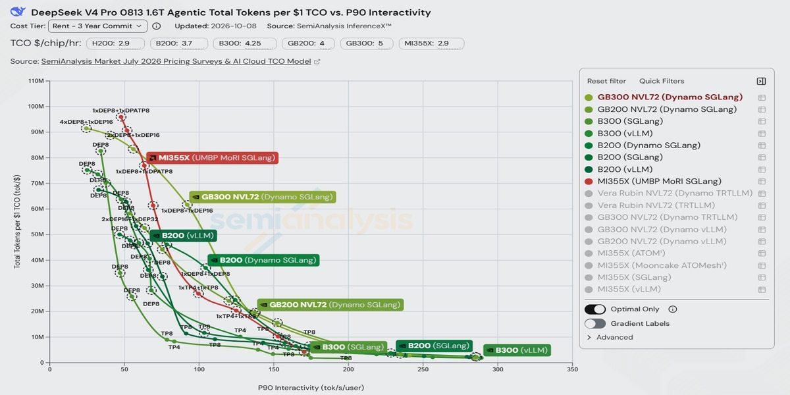
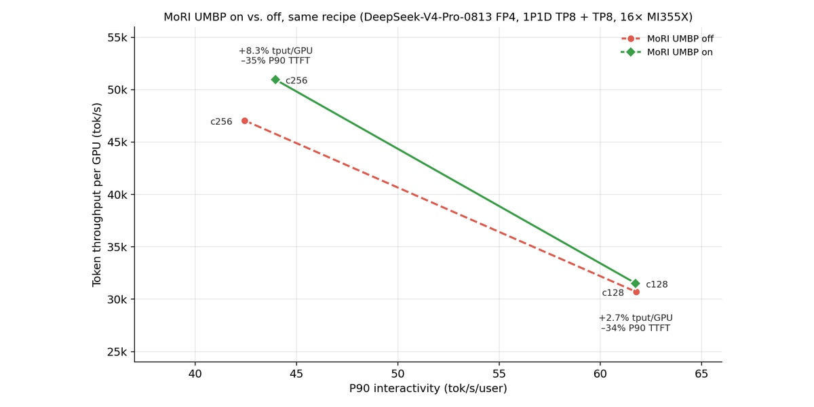
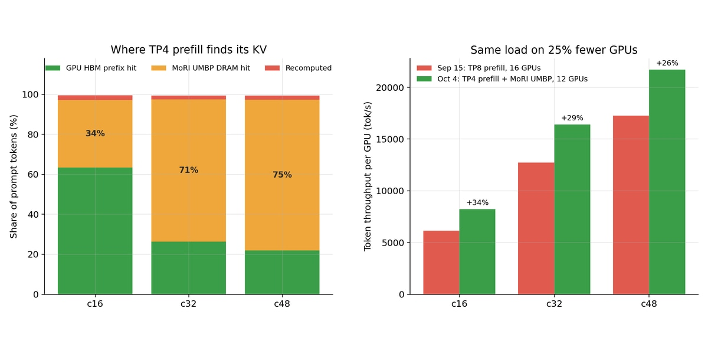
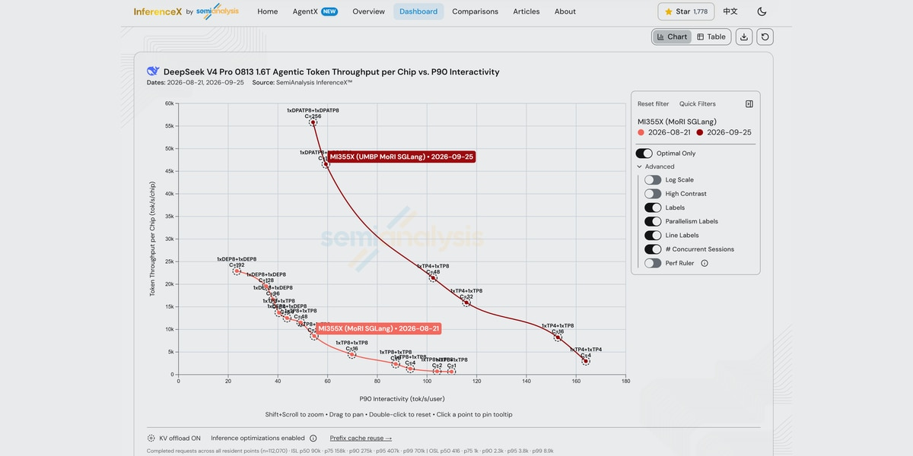
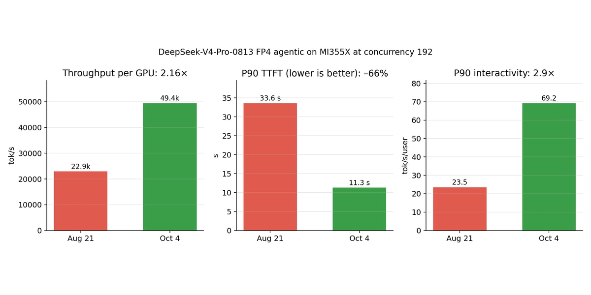

MoRI UMBP 助力 AMD Instinct MI355X GPU，在公开 AgentX 排行榜上实现每美元 Token TCO 领先
智能体应用会运行持续时间很长的多轮会话。因此，服务成本几乎完全取决于服务器能够复用多少 KV 缓存，而不是重新计算多少内容。
今年 7 月，我们与 Moonshot AI 一起在《从第一性原理重建 AMD GPU 智能体 AI》中介绍了 SGLang + MoRI UMBP（Unified Memory & Bandwidth Pool，统一内存与带宽池）。MoRI UMBP 是 AMD MoRI 团队从第一性原理出发构建的 KV 缓存基础设施：以智能体工作负载本身为起点，专门为 AMD 平台设计。在过去一个月中，我们把这项工作贡献给了 SGLang 社区，并通过新的 KVCache Store Linker 将其带入开源生态，让整个社区都能受益。
在公开的 SemiAnalysis AgentX 基准测试中，使用 DeepSeek-V4-Pro-0813 1.6T 的 AMD Instinct™ MI355X GPU，通过 MoRI 解耦架构运行，以 MoRI UMBP 作为统一 KV 缓存池，并叠加 AMD 在 SGLang 社区持续开展的优化工作，如今峰值可达到每 1 美元 TCO 处理 9600 万个总 token。作为对比，运行 Dynamo SGLang 的 NVIDIA B200 为 4600 万，AMD 在每美元 token 数上实现 2.1 倍优势；在部分交互性能水平上，MI355X 还超过了 NVIDIA GB200、B300 和 GB300（SemiAnalysis，更新于 2026-10-04）。

图 1：公开 SemiAnalysis InferenceX 仪表板上的 DeepSeek-V4-Pro-0813 1.6T 智能体总 token 数/每 1 美元 TCO，与 P90 交互性能的关系（租用/三年期承诺档，更新于 2026-10-04）。红色曲线是使用 UMBP + MoRI + SGLang 的 MI355X FP4；绿色曲线是 NVIDIA 系统，包括 B200、B300、H200、GB200、GB300 NVL72，以及 Vera Rubin NVL72 预览版。越靠右上方越好；标签表示各数据点的并行布局。
下文将详细介绍 UMBP 如何实现这一结果。
公开 AgentX 基准测试快速回顾
AgentX 是 SemiAnalysis 根据真实世界智能体编程轨迹构建的公开基准测试，通过公开的 InferenceX 测试框架和仪表板运行。它正迅速成为智能体推理评测的行业标准，已被 OpenAI、Meta、Inferact、RadixArk、MiniMax、阿里巴巴 Qwen、Moonshot AI、智谱 GLM 和 Oracle 等全球领先团队采用。其方法、结果和持续集成（CI）流程全部公开，因此本文中的每个数字都可以独立核验，NVIDIA 也可以进行验证。
AgentX 会重放完整的智能体会话：每一轮把工具返回结果追加到累积上下文中，然后再次查询模型。这类流量具有传统聊天基准测试无法产生的四个特征：
- 持续时间长的多轮会话：每个会话大约 43 轮，在整个会话生命周期内产生约 100 万 token 的上下文流量。
- 长上下文、短输出：每轮输入 token 中位数为 14.2 万，而输出 token 中位数只有 444。
- 大量前缀复用：超过 96% 的提示 token 都是服务器此前已经见过的前缀重复内容。
- 子智能体和工具调用：它们会把单个用户任务展开为多个并发会话，而这些会话共享同一前缀。
AgentX 会报告首 token 延迟（TTFT）、P90 交互性能（每位用户的 token/s）、TPGS（每 GPU 秒的总 token 数，包含缓存 token）以及 TCO（每 token 的基础设施成本）。图 1 展示的正是最后一项指标。
当前缀复用率达到 96% 时，缓存管理决定了预填充（prefill）成本。由于智能体必须等待完整响应，真正重要的是端到端延迟，而其中主要部分来自解码。AgentX 因此提出了三个必须解决的挑战：
- KV 缓存无法全部装入 HBM：当多个长会话同时存活、子智能体又不断展开时，在中等并发下，大部分可复用 KV 已经从 GPU 内存中被逐出。
- KV 缓存没有在 TP rank 之间分片：在 DeepSeek-V4 稀疏注意力下，每个 rank 都完整复制 MLA latent 和 DSA indexer KV。
- 缓存热度并非免费获得：如果主机缓存位于引擎进程内部，那么每次重启和滚动升级都会让缓存全部丢失。
MoRI UMBP + SGLang KVCache Store Linker
我们通过组合 MoRI UMBP 与 SGLang KVCache Store Linker 来解决上述三个挑战。本节将介绍我们在 AgentX 上观察到的问题、由此设计的 Linker，以及最终取得的结果。
AgentX 上的观察
MoRI UMBP 最初作为 HiCache L3 存储后端集成到 SGLang 中。评估这一配置在 AgentX 上的表现时，我们得出六点观察：
- 可共享 DRAM 被浪费：每个 rank 的 L2 主机缓存占用了本可提供给可共享 L3 后端的 DRAM，减少了有效共享容量。
- 间接数据路径：KV 在 L1 HBM 与 L3 后端之间移动时必须经过 L2 主机层。这会增加加载和卸载开销，也使 L1 ⇔ L3 的直接数据路径无法实现。
- 按 rank 的局部管理：每个 rank 独立管理自己的主机缓存，并且只根据局部信息作出全部 KV 决策，从全局角度看并非最优。
- 重复复制：在 MLA + TP 下，每个 TP rank 都会复制 KV 缓存，并独立加载和卸载，浪费内存与 PCIe 带宽。
- 缺少逐层流水线：L2→L1 加载可以逐层与计算重叠，但从外部 L3 后端提取到 L2 的过程没有流水线化，必须在计算开始前完全结束。
- 缓存随引擎退出而消失：主机缓存位于引擎进程中，因此任何重启都会将其清空。
KVCache Store Linker
我们向 SGLang 维护者提议增加一种选项：完全绕过 L2 主机层，在 L1 HBM 与外部 KV 缓存存储之间建立直接数据路径。这一方向后来被证明与社区自身的规划高度一致。随后，MoRI 团队与 SGLang 社区共同设计了 KVCache Store Linker，并把 MoRI UMBP 集成为一等后端。Linker 将 SGLang 的统一基数树（unified radix tree）直接连接到分布式 DRAM 池。当前缀匹配时，预填充阶段会从 DRAM 拉取 KV 页，而不是重新计算。
Linker + MoRI UMBP 解决了上面的全部六个问题：
- 在 DP rank 和模型实例之间完全共享 DRAM，通过跨 DP rank 共享 KV 缓存，支持 DP + 轮询部署。
- 直接 L1 ⇔ L3 路径，没有中间层开销。仅这一项就能让 TTFT 相比不使用 MoRI UMBP 最多改善 13%。
- 全局 KV 管理：MoRI UMBP 根据全局信息放置和逐出 KV，比每个 rank 的局部策略更有效。
- 去重，并按 rank 拆分加载/卸载，减轻内存与 PCIe 带宽压力。TP-N 预填充现在只需存储和提取一份重复的 MLA/DSA KV，而不是 N 份；在 TP8 下，八份 key 合并为一份。这会让有效 DRAM 容量增加相同倍数，并按同样比例减少主机流量。
- 逐层流水线加载：MoRI UMBP 通过批处理、层分组、范围 API，以及为主机到设备 KV 加载优化的 GPU gather 内核，隐藏新增的逐层请求开销。
- 缓存可跨引擎重启继续存在：在 MoRI UMBP 独立模式下，KV 池位于每个节点上的独立进程中，因此重启和升级后可直接复用，无需重新预热。
结果
即使 DRAM 层几乎没有被使用，这些修复也能带来收益。在使用相同配置的开关对比测试中——1P1D TP8 + TP8、16 张 MI355X GPU、600 GB DRAM KV 预算，并使用 consistent_hashing 路由器保持 KV 缓存亲和性——在并发 128–256 时，HBM 已经服务约 95.6% 的提示 token，而 DRAM 层服务不到 1%。即便如此，开启 MoRI UMBP 后，在并发 256 时，每 GPU 吞吐提高 8.3%，P90 TTFT 降低 35%；在并发 128 时，这两个数字分别为提高 2.7% 和降低 34%（图 2）。这一收益来自架构本身，而非卸载，并直接对应前面两点观察：
- 可共享 DRAM 被浪费：关闭 MoRI UMBP 时，主机 KV 池依然会被填满——并发 128 时达到 72%，并发 256 时达到 100%——但最多只服务 0.1% 的提示 token。开启 MoRI UMBP 后，这些 DRAM 会变成一个统一的共享池。
- 间接数据路径：两次运行中 DRAM 层都几乎空闲，因此收益来自 Linker 的直接 HBM ⇔ DRAM 路径，它移除了中间暂存层及其加载/卸载开销。

图 2：相同配置、并发 128 和 256 下，关闭和开启 MoRI UMBP 时的每 GPU 吞吐与 P90 交互性能。越靠右上方越好。
足够大的缓存会改变系统拓扑。建立去重 DRAM 层后，预填充阶段不再需要仅仅为了容纳 KV 而使用 TP8。在并发 16–48 时，我们使用 TP4 预填充 + TP8 解码（12 张 GPU），取代 TP8 + TP8（16 张 GPU）。在并发 16、32 和 48 时，MoRI UMBP 分别服务 34%、71% 和 75% 的提示 token，而需要重新计算的比例不到 3%。在 GPU 数量减少 25% 的同时，每 GPU 吞吐提高了 26%–34%。

图 3：左图展示在 MoRI UMBP Linker 下，TP4 预填充为每个提示 token 查找 KV 的位置：GPU HBM 前缀缓存、MoRI UMBP DRAM 层或重新计算。随着并发提高、HBM 逐出更多数据，DRAM 层吸收了这部分差额。右图对比 9 月 15 日配置（TP8 预填充 + TP8 解码，16 张 GPU）与 10 月 4 日配置（TP4 预填充 + MoRI UMBP + TP8 解码，12 张 GPU）的每 GPU 吞吐。
进一步优化
与此同时，AMD SGLang 团队继续为 DeepSeek-V4-Pro-0813 提供优化，覆盖以下方面：
- FP4 稀疏注意力 indexer：DeepSeek-V4 的 DSA indexer 会在每一层为每个查询 token 对完整上下文打分，并维护自身的逐 token KV。在 gfx950 上使用 AITER FP4 内核运行后，每个 token 的 KV 从 132 B 减少到 68 B，从而让 HBM 容纳更多并发序列、降低每个解码步骤的 indexer 带宽，并减少通过 MoRI 链路传输的字节数。
- 由请求拥有推测 KV 的乐观预填充：在 PD 解耦中，请求通常要等待解码阶段为其完成引导，之后预填充才能开始；高并发下，这次握手完全是排队时间。让预填充乐观地提前启动，并让推测 KV 归请求所有，而不是归预留的解码 slot 所有后，并发 256 时的 P90 TTFT 降低了 27.7%。此外，从 DSpark 预填充 slot 扩展中移除一次主机同步，又让并发 128–256 时的 P90 TTFT 进一步降低 13%–16%。
- 用于 MLA 解码的逐 stream split-K：根据每个 index stream 选择 split-K 因子，而不是对 KV 长度相差数个数量级的层应用同一个设置。
- 采用 FP8 KV 缓存的 MegaMoE 预填充（InferenceX#3664）：在并发 192–512 时，预填充使用具有 8 路专家并行的 AITER MegaMoEv2（sglang#35619），同时将 DeepSeek-V4 KV 池拆分为 FP8 NoPE 部分和 BF16 RoPE 部分。结合 SGLang v0.5.21 镜像后，并发 256 时的每 GPU 吞吐从 55.8k 提升至 62.0k（+11%），并将曲线扩展到并发 384 和 512。

图 4：整个优化过程中的每 GPU 吞吐与 P90 交互性能。8 月 21 日基线在每个数据点都使用 16 张 GPU（1P1D、TP8 + TP8）；优化后的配置根据并发度选择 8、12 或 16 张 GPU，并报告按 GPU 归一化的吞吐。
总结
这项工作产生了以下结果：
- 相对于 NVIDIA Blackwell 系统：在公开 AgentX 排行榜上，MI355X 的峰值达到每 1 美元 TCO 处理 9600 万个总 token；运行 Dynamo SGLang 的 B200 为 4600 万。前者的每美元 token 数是后者的 2.1 倍（图 1）。
- 相对于一个月前的自身结果：在同一基准测试、同为并发 192 的条件下，吞吐、TTFT 和交互性能均有显著改善（图 5）。
- 相对于六周前的自身结果：在同一基准测试中，10 月 4 日的曲线在每个交互性能水平上都远高于 8 月 21 日基线（图 5）。同为并发 192 时，每 GPU 吞吐提高 2.2 倍（22.9k → 49.4k），P90 TTFT 降低 66%（33.6 秒 → 11.3 秒），P90 交互性能提高 2.9 倍（23.5 → 69.2 token/s/用户）。

图 5：并发 192 下 MI355X 的 8 月 21 日基线与 9 月 25 日运行结果。从左到右依次是每 GPU 吞吐、P90 TTFT（越低越好）和 P90 交互性能。
每 GPU 峰值吞吐也从 22.9k 提高到 77.3k，增幅 3.4 倍；峰值对应的并发度则从 192 移至 512。
在智能体工作负载中，96% 的提示 token 已经计算过，因此每 token 的成本取决于管理这些 token 存放位置的系统。MoRI UMBP 正是这样的系统：它把 DRAM 转变为可跨实例共享、可跨引擎重启继续存在的去重 KV 池，并通过 KVCache Store Linker 直接接入 SGLang 的基数树。
7 月路线图的第一项任务是完成 MoRI UMBP 集成；这项工作现已交付。下一步是把 MoRI UMBP 带到更广泛的生态系统，例如 ATOM、vLLM 和 llm-d。
致谢
感谢 SGLang 社区提供设计评审并快速将代码合入上游，感谢 SemiAnalysis 提供 AgentX 基准测试和 InferenceX CI 基础设施，也感谢 AMD MoRI、SGLang 和 AITER 团队。
参考资料
- SemiAnalysis — AgentX 基准测试和 InferenceX 仪表板
- vLLM — AgentX
- AMD — 从第一性原理重建 AMD GPU 智能体 AI：携手 Moonshot AI（“什么是 UMBP”）